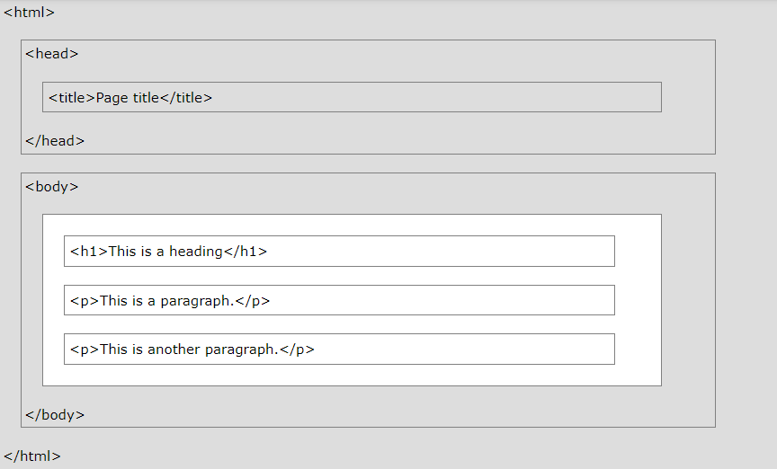
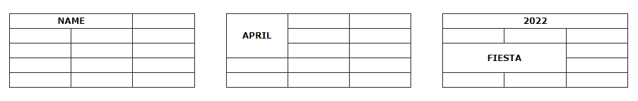

HTML-ի Կառուցվածքը
HTML-ը վեբ էջեր ստեղծելու ստանդարտ կմախքային լեզու է:
Ի՞նչ է HTML-ը
- HTML-ը նշանակում է Hyper Text Markup Language
- HTML-ը վեբ էջեր ստեղծելու ստանդարտ նշագրման լեզու է
- HTML-ը նկարագրում է վեբ էջի կառուցվածքը
- HTML-ը բաղկացած է մի շարք տարրերից
- HTML տարրերը պիտակավորում են բովանդակության այնպիսի հատվածներ,
ինչպիսիք են «սա վերնագիր է», «սա պարբերություն է», «սա հղում է» և այլն:
Պարզ HTML փաստաթուղթ
ՕՐԻՆԱԿ
<!DOCTYPE html>
<html>
<head>
<title>Page Title</title>
</head>
<body>
<h1>My First Heading</h1>
<p>My first paragraph.</p>
</body>
</html>
Բացատրված օրինակը
- <!DOCTYPE html> հռչակագիրը սահմանում է, որ այս փաստաթուղթը HTML5 փաստաթուղթ է
- <html> տարրը HTML էջի արմատային տարրն է
- <head> տարրը պարունակում է մետա տեղեկատվություն HTML էջի մասին
- <title> տարրը նշում է վերնագիր HTML էջի համար (որը ցուցադրվում է դիտարկիչի
վերնագրի տողում կամ էջի ներդիրում) - <body> տարրը սահմանում է փաստաթղթի մարմինը և հանդիսանում է բոլոր տեսանելի
բովանդակության կոնտեյներ, ինչպիսիք են վերնագրերը, պարբերությունները, պատկերները,
հիպերհղումները, աղյուսակները, ցուցակները և այլն: - <h1> տարրը սահմանում է մեծ վերնագիր
- <p> տարրը սահմանում է պարբերություն
Ի՞նչ է HTML տարրը:
HTML տարրը սահմանվում է սկզբնական մեկ հատանի չակերտով, որոշ բովանդակությամբ և ավարտի մեկ հատանի չակերտով.
<tagname>Բովանդակություն</tagname>
HTML տարրը ամեն ինչ է՝ սկզբի թեգից մինչև վերջ:
Նշում: որոշ HTML տարրեր չունեն բովանդակություն (ինչպես <br> տարրը): Այս տարրերը կոչվում են դատարկ տարրեր: Դատարկ տարրերը վերջի թեգ չունեն:
Վեբ բրաուզերներ
Վեբ բրաուզերի (Chrome, Edge, Firefox, Safari) նպատակը HTML փաստաթղթերը կարդալն ու դրանք ճիշտ ցուցադրելն է։
Բրաուզերը չի ցուցադրում HTML թեգերը, այլ օգտագործում է դրանք՝ որոշելու, թե ինչպես ցուցադրել փաստաթուղթը.

HTML էջի կառուցվածքը
Ստորև ներկայացված է HTML էջի կառուցվածքը։
Նշում: <body> բաժնի բովանդակությունը (վերևի սպիտակ տարածքը) կցուցադրվի բրաուզերում: <title> տարրի բովանդակությունը կցուցադրվի բրաուզերի վերնագրի տողում կամ էջի ներդիրում:
HTML հիմնական օրինակներ
Այս գլխում մենք ցույց կտանք մի քանի հիմնական HTML օրինակներ:
Մի անհանգստացեք, եթե մենք օգտագործում ենք թեգեր, որոնց մասին դեռ չեք իմացել:
<!DOCTYPE> հռչակագիր
<!DOCTYPE> հայտարարությունը ներկայացնում է փաստաթղթի տեսակը և օգնում դիտարկիչներին ճիշտ ցուցադրել վեբ էջերը:
Այն պետք է հայտնվի միայն մեկ անգամ՝ էջի վերևում (մինչև HTML թեգը):
HTML5-ի <!DOCTYPE> հռչակագիրը
<!DOCTYPE html>
HTML վերնագրեր
HTML վերնագրերը սահմանվում են <h1>-ից <h6> թեգերով:
<h1> սահմանում է ամենակարևոր վերնագիրը: <h6> սահմանում է ամենաքիչ կարևոր վերնագիրը.
HTML պարբերություններ
HTML պարբերությունները սահմանվում են <p> թեգով:
HTML հղումներ
HTML հղումները սահմանվում են <a> թեգով.
Հղման նպատակակետը նշված է href ատրիբուտով:
Ատրիբուտները օգտագործվում են HTML տարրերի մասին լրացուցիչ տեղեկություններ տրամադրելու համար:
Ատրիբուտների մասին ավելին կիմանաք հաջորդ գլխում:
HTML նկարներ
HTML պատկերները սահմանվում են <img> թեգով:
Աղբյուրի ֆայլը (src), նկարագրման տեքստը (alt), width և height տրամադրվում են որպես ատրիբուտներ.
HTML ատրիբուտներ
HTML ատրիբուտները լրացուցիչ տեղեկություններ են տալիս HTML տարրերի մասին:
- Բոլոր HTML տարրերը կարող են ունենալ ատրիբուտներ
- Ատրիբուտները միշտ նշվում են սկզբնական թեգում
- Ատրիբուտները սովորաբար գրվում են անուն/արժեք զույգ չակերտներով, ինչպիսիք են՝ name="արժեքը"
HTML ատրիբուտներ
Հղումների ատրիբուտներ
HTML հղումները սահմանվում են <a> թեգով.
Հղման նպատակակետը նշված է href ատրիբուտով:
Ատրիբուտները օգտագործվում են HTML տարրերի մասին լրացուցիչ տեղեկություններ տրամադրելու համար:
Նկարների ատրիբուտներ
HTML պատկերները սահմանվում են <img> թեգով:
Աղբյուրի ֆայլը (src), նկարագրման տեքստը (alt), width և height տրամադրվում են որպես ատրիբուտներ.
Ոճի ատրիբուտ
Style ատրիբուտ օգտագործվում է տարրին ոճեր ավելացնելու համար, ինչպիսիք են գույնը, տառատեսակը, չափը և այլն:
Leng ատրիբուտ
Դուք միշտ պետք է ներառեք lang ատրիբուտը <html> թեգի ներսում՝ վեբ էջի լեզուն հայտարարելու համար: Սա նախատեսված է օգնելու որոնման համակարգերին և բրաուզերներին:
Հետևյալ օրինակը նշում է անգլերենը որպես լեզու:
Երկրի կոդերը կարող են նաև ավելացվել լեզվի կոդի մեջ lang ատրիբուտում: Այսպիսով, առաջին երկու նիշերը սահմանում են HTML էջի լեզուն, իսկ վերջին երկու նիշերը՝ երկիրը:
Հետևյալ օրինակը նշում է անգլերենը որպես լեզու և Միացյալ Նահանգները որպես երկիր.
Վերանգրի ատրիբուտ
Վերնագրի ատրիբուտը սահմանում է որոշ լրացուցիչ տեղեկություններ թեգի մասին:
Վերնագրի ատրիբուտի արժեքը կցուցադրվի որպես գործիքի հուշում, երբ մկնիկը անցնի թեգի վրայով՝
Գլխի Անփոփում
- Բոլոր HTML թեգերը կարող են ունենալ ատրիբուտներ
- <a>-ի href ատրիբուտը նշում է այն էջի URL-ը, ուր գնում է հղումը
- <img>-ի src ատրիբուտը նշում է ցուցադրվող պատկերի ուղին
- <img>-ի width և height ատրիբուտները տրամադրում են պատկերների չափը
- <img>-ի alt ատրիբուտը պատկերի համար նկարագրային տեքստ է տրամադրում
- Style ատրիբուտը օգտագործվում է թեգերին ոճեր ավելացնելու համար, ինչպիսիք են գույնը, տառատեսակը, չափը և այլն
- <html> թեգի lang ատրիբուտը հայտարարում է վեբ էջի լեզուն
- Title ատրիբուտը սահմանում է որոշ լրացուցիչ տեղեկություններ թեգի մասին
HTML Վերնագրեր
HTML վերնագրերը դրանք՝ վերնագրեր կամ ենթագրեր են, որոնք ցանկանում եք ցուցադրել վեբ էջում:
HTML Վերնագրեր
HTML վերնագրերը սահմանվում են <h1>-ից <h6> թեգերով:
<h1> սահմանում է ամենակարևոր վերնագիրը: <h6> սահմանում է ամենաքիչ կարևոր վերնագիրը:
ՕՐԻՆԱԿ
<h1>Վերնագիր</h1>
<h2>Վերնագիր</h2>
<h3>Վերնագիր</h3>
<h4>Վերնագիր</h4>
<h5>Վերնագիր</h5>
<h6>Վերնագիր</h6>
Նշում: Բրաուզերներն ավտոմատ կերպով ավելացնում են որոշ սպիտակ տարածություն (margin) վերնագրից առաջ և հետո:
Ավելի մեծ վերնագրեր
Յուրաքանչյուր HTML վերնագիր ունի հիմնական չափս: Այնուամենայնիվ, դուք կարող եք նշել ցանկացած վերնագրի չափը style հատկանիշով, օգտագործելով CSS-ի font-size հատկությունը.
HTML Պարագրաֆ
Պարբերությունը միշտ սկսվում է նոր տողից և օգտագործվում է որպես տեքստի բլոկ։
HTML Պարագրաֆներ
HTML <p> թեգը սահմանում է պարբերություն:
Պարբերությունը միշտ սկսվում է նոր տողից, և բրաուզերներն ավտոմատ կերպով ավելացնում են որոշ սպիտակ տարածություն (margin) պարբերությունից առաջ և հետո:
HTML Էկրան
Դուք չեք կարող վստահ լինել, թե ինչպես կցուցադրվի HTML-ը:
Մեծ կամ փոքր էկրանները և չափափոխված պատուհանները տարբեր արդյունքներ կստեղծեն:
HTML-ով դուք չեք կարող փոխել էկրանը՝ ավելացնելով լրացուցիչ բացատներ կամ լրացուցիչ տողեր ձեր HTML կոդը:
Բրաուզերը ավտոմատ կերպով կհեռացնի լրացուցիչ բացատները և տողերը, երբ էջը ցուցադրվի.
HTML Հորիզոնական գիծ
<hr> թեգը սահմանում է թեմատիկ ընդմիջում HTML էջի մեջ և ամենից հաճախ ցուցադրվում է որպես հորիզոնական գիծ։
<hr> թեգն օգտագործվում է HTML էջի բովանդակությունը առանձնացնելու (կամ փոփոխություն սահմանելու համար).
ՕՐԻՆԱԿ
<h1>Վերնագիր 1</h1>
<p>Ինչ որ մի տեքստ</p>
<hr>
<h1>Վերնագիր 2</h1>
<p>Ինչ որ մի տեքստ</p>
<hr>
<hr> թեգը դատարկ թեգ է, ինչը նշանակում է, որ այն չունի վերջի թեգ:
HTML Նոր տող
Օգտագործեք <br>, եթե ցանկանում եք տողերի ընդմիջում (նոր տող) առանց նոր պարբերություն սկսելու.
<br> թեգը դատարկ թեգ է, ինչը նշանակում է, որ այն չունի վերջի թեգ:
HTML Ստայլեր
HTML style հատկանիշը օգտագործվում է տարրին ոճեր ավելացնելու համար, ինչպիսիք են գույնը, տառատեսակը, չափը և այլն:
HTML տարրի ոճը սահմանելը կարող է կատարվել style ատրիբուտով:
HTML ոճի ատրիբուտը ունի հետևյալ շարահյուսությունը.
<թեգիանուն style="կոդ։ արժեք;" >
Ֆոնի գույնը
CSS ֆոնային գույնի հատկությունը սահմանում է HTML տարրի ֆոնի գույնը:
ՕՐԻՆԱԿ
Սահմանեք տեքստի ֆոնի գույնը դեղին.
<h1 style="background-color: yellow;" >Վերնագիր 1</h1>
<p>Ինչ որ մի տեքստ</p>
Տեքստի գույն
CSS գույնի հատկությունը սահմանում է HTML տարրի տեքստի գույնը.
Տառատեսակներ
CSS font-family հատկությունը սահմանում է HTML տարրի համար օգտագործվող տառատեսակը.
ՕՐԻՆԱԿ
<h1 style="font-family: arial;" >Վերնագիր 1</h1>
<p style="font-family: verdana;" >Ինչ որ մի տեքստ</p>
Տեքստի չափը
CSS font-size հատկությունը սահմանում է HTML տարրի տեքստի չափը.
ՕՐԻՆԱԿ
<h1 style="font-size: 30px;" >Վերնագիր 1</h1>
<p style="font-size: 10px;" >Ինչ որ մի տեքստ</p>
Տեքստի հավասարեցում
CSS text-align հատկությունը սահմանում է տեքստի հորիզոնական հավասարեցում HTML տարրի համար.
ՕՐԻՆԱԿ
<h1 style="text-align: left;" >Վերնագիր 1</h1>
<p style="text-align: center;" >Ինչ որ մի տեքստ</p>
Գլուխի ամփոփում
- Օգտագործեք style հատկանիշը HTML տարրերի ոճավորման համար
- Օգտագործեք background-color ֆոնի գույնի համար
- Օգտագործեք color տեքստի գույների համար
- Տեքստի տառատեսակների համար օգտագործեք font-family
- Տեքստի չափերի համար օգտագործեք font-size
- Տեքստի հավասարեցման համար օգտագործեք text-align
HTML Հղումներ
Հղումները գտնվում են գրեթե բոլոր վեբ էջերում: Հղումները թույլ են տալիս օգտվողներին ացնել էջից էջ:
HTML Հղումներ - Հիպերհղումներ
HTML հղումները հիպերհղումներ են:
Կարող եք սեղմել հղման վրա և անցնել մեկ այլ փաստաթուղթ:
Երբ մկնիկը տեղափոխում եք հղման վրա, մկնիկի սլաքը կվերածվի փոքրիկ ձեռքի:
Նշում: Հղումը պարտադիր չէ, որ լինի տեքստ: Հղումը կարող է լինել պատկեր կամ ցանկացած այլ HTML տարր:
HTML Հղումներ - Շարահյուսություն
HTML <a> թեգը սահմանում է հիպերհղում: Այն ունի հետևյալ շարահյուսությունը.
<a> տարրի ամենակարեւոր ատրիբուտը href ատրիբուտն է, որը ցույց է տալիս հղման նպատակակետը։
Հղման տեքստը այն հատվածն է, որը տեսանելի կլինի ընթերցողին:
Սեղմելով հղման տեքստը, ընթերցողին կգնա նշված URL հասցեով:
Միշտ, բոլոր բրաուզերներում հղումները կհայտնվեն հետևյալ կերպ.
- Չայցելված հղումն ընդգծված է և կապույտ
- Այցելած հղումն ընդգծված է և մանուշակագույն
- Ակտիվ հղումն ընդգծված է և կարմիր
Հուշում: Հղումները, իհարկե, կարող են ձևավորվել CSS-ով, այլ տեսք ստանալու համար:
HTML Հղումներ - Թիրախային ատրիբուտ
Հիմնականում, կապված էջը կցուցադրվի ընթացիկ բրաուզերի պատուհանում: Սա փոխելու համար դուք պետք է նշեք մեկ այլ թիրախ հղման համար:
target ատրիբուտը նշում է, թե որտեղ պետք է բացել կապակցված փաստաթուղթը:
target ատրիբուտը կարող է ունենալ հետևյալ արժեքներից մեկը.
- _self - Կանխադրված: Փաստաթուղթը բացում է նույն պատուհանում/ներդիրում, որին սեղմել են
- _blank - Փաստաթուղթը բացում է նոր պատուհանում կամ ներդիրում
- _parent - Բացում է փաստաթուղթը մայր շրջանակում
- _top - Բացում է փաստաթուղթը պատուհանի ամբողջ մասում
ՕՐԻՆԱԿ
Օգտագործեք target="_blank"՝ կապված փաստաթուղթը բրաուզերի նոր պատուհանում կամ ներդիրում բացելու համար.
Բացարձակ URL-ներ ընդդեմ հարաբերական URL-ների
Վերոհիշյալ երկու օրինակներն օգտագործում են բացարձակ URL (ամբողջական վեբ հասցե) href ատրիբուտով:
Տեղական հղումը (միևնույն կայքէջում գտնվող էջի հղումը) նշվում է հարաբերական URL-ով (առանց «https://www» մասի).
ՕՐԻՆԱԿ
<h1>Բացարձակ URL-ներ</h1>
<a href="https://TheCodefather.com/" target="_blank" >The CodeFather</a>
<h1>Հարաբերական URL-ներ</h1>
<a href="logoblack.png" target="_blank" >Նկար</a>
<a href="/css/default.css" target="_blank" >CSS ֆայլ</a>
HTML Հղումներ - Օգտագործեք պատկերը որպես հղում
Պատկերը որպես հղում օգտագործելու համար պարզապես դրեք <img> թեգը <a> թեգի ներսում.
HTML Աղյուսակներ
HTML աղյուսակները թույլ են տալիս վեբ մշակողներին տվյալները դասավորել տողերի և սյունակների մեջ:
ՕՐԻՆԱԿ
| Կազմակերպություն | Կոնտակտ | Քաղաք |
|---|---|---|
| Alfreds Futterkiste | Maria Anders | Գերմանիա |
| Centro comercial Moctezuma | Francisco Chang | Մեկսիկո |
| Ernst Handel | Roland Mendel | Ավստրիա |
| Island Trading | Helen Bennett | Բրիտանիա |
| Laughing Bacchus Winecellars | Yoshi Tannamuri | Կանադա |
| Magazzini Alimentari Riuniti | Giovanni Rovelli | Իատալիա |
Սահմանեք HTML աղյուսակ
HTML-ում աղյուսակը բաղկացած է տողերի և սյունակների ներսում աղյուսակի բջիջներից
ՕՐԻՆԱԿ
<table>
<tr>
<th>Կազմակերպություն</th>
<th>Կոնտակտ</th>
<th>Քաղաք</th>
</tr>
<tr>
<td>Alfreds Futterkiste</td>
<td>Maria Anders</td>
<td>Գերմանիա</td>
</tr>
<tr>
<td>Centro comercial Moctezuma</td>
<td>Francisco Chang</td>
<td>Մեկսիկո</td>
</tr>
</table>
Աղյուսակի բջիջներ
Աղյուսակի յուրաքանչյուր բջիջ սահմանվում է <td> և </td> թեգերով:
td-ն նշանակում է աղյուսակի տվյալները:
Ամեն ինչ <td>-ի և </td>-ի միջև աղյուսակի բջիջի բովանդակությունն է:
Նշում: Աղյուսակները կարող են պարունակել բոլոր տեսակի HTML տարրեր; տեքստ, պատկերներ, ցուցակներ, այլ աղյուսակներ և այլն:
Աղյուսակի տողեր
Աղյուսակի յուրաքանչյուր տող սկսվում է <tr>-ով և ավարտվում </tr> թեգով:
ՕՐԻՆԱԿ
<table>
<tr>
<td>A</td>
<td>B</td>
<td>C</td>
</tr>
</table>
<table>
<tr>
<td>C</td>
<td>A</td>
<td>B</td>
</tr>
</table>
Աղյուսակում կարող եք ունենալ այնքան տող, որքան ցանկանում եք, պարզապես համոզվեք, որ յուրաքանչյուր տողում բջիջների թիվը նույնն է:
Նշում: Աղյուսակի չափերը և այլ ոճեր կարող եք կառավարել CSS-ի միջոցով
HTML աղյուսակ Colspan և Rowspan
HTML աղյուսակները կարող են ունենալ բջիջներ, որոնք տարածվում են մի քանի տողերի և/կամ սյունակների վրա:

HTML Աղյուսակ - Colspan
Բջիջը մի քանի սյունակների վրա բացելու համար օգտագործեք colspan հատկանիշը՝
ՕՐԻՆԱԿ
<table>
<tr>
<th colspan="2">A</th>
<th>B</th>
<th>C</th>
</tr>
</table>
<table>
<tr>
<td>C</td>
<td>A</td>
<td>B</td>
</tr>
</table>
HTML Աղյուսակ - Rowspan
Բջիջը մի քանի տողերի վրա ընդլայնելու համար օգտագործեք rowspan ատրիբուտը
HTML Ցուցակներ
HTML ցուցակները թույլ են տալիս վեբ ծրագրավորողներին խմբավորել մի շարք իրար առնչվող տարրեր ցուցակներում:
Չհամարակալված HTML ցուցակ
Չհամարակալված ցուցակը սկսվում է <ul> թեգով: Ցանկի յուրաքանչյուր տարր սկսվում է <li> թեգով:
Ցանկի տարրերը կնշվեն պարբերակներով (փոքր սև շրջանակներ).
Համարակալված HTML ցուցակ
Համարակալված ցուցակը սկսվում է <ol> թեգով: Ցանկի յուրաքանչյուր տարր սկսվում է <li> թեգով:
Ցանկի տարրերը կնշվեն թվերով.
HTML Նկարագրության Ցուցակներ
Նկարագրության ցանկը տերմինների ցանկ է՝ յուրաքանչյուր տերմինի նկարագրությամբ:
<dl> թեգը սահմանում է նկարագրության ցանկը, <dt> թեգը սահմանում է տերմինը (անունը), իսկ <dd> թեգը նկարագրում է յուրաքանչյուր տերմին:
HTML Ֆորմ
HTML ֆորմն օգտագործվում է օգտվողի մուտքերը հավաքելու համար: Օգտագործողի մուտքագրումն առավել հաճախ ուղարկվում է սերվեր՝ մշակման համար:
<form> Տարրը
HTML <form> տարրն օգտագործվում է օգտվողի մուտքագրման համար HTML ֆորմ ստեղծելու համար.
<form>
form տարր
</form>
<form> տարրը կոնտեյներ է տարբեր տեսակի մուտքային տարրերի համար, ինչպիսիք են՝ տեքստային դաշտերը, վանդակները, ռադիո կոճակները, ուղարկելու կոճակները և այլն։
HTML Ֆորմ-ի Տարրերը
<input> Տարրը
HTML <input> տարրը ամենաշատ օգտագործվող ֆորմի տարրն է:
<input> տարրը կարող է ցուցադրվել բազմաթիվ ձևերով՝ կախված տեսակի հատկանիշից:
Ահա մի քանի օրինակներ.
| Տեսակ | Նկարագրություն |
|---|---|
| <input type="text"> | Ցուցադրում է մեկ տողով տեքստի մուտքագրման դաշտ |
| <input type="radio"> | Ցույց է տալիս ռադիո կոճակը (բազմաթիվ տարբերակներից մեկը ընտրելու համար) |
| <input type="checkbox"> | Ցուցադրում է վանդակ (բազմաթիվ ընտրանքներից զրո կամ ավելի ընտրելու համար) |
| <input type="submit"> | Ցուցադրում է ուղարկել կոճակը |
| <input type="button"> | Ցուցադրում է սեղմվող կոճակ |
<label> Տարրը
<label> թեգը սահմանում է պիտակ շատ ձևի տարրերի համար:
<label> տարրը նաև օգնում է օգտատերերին, ովքեր դժվարանում են սեղմել շատ փոքր շրջանների վրա (օրինակ՝ ռադիո կոճակները կամ վանդակները), քանի որ երբ օգտատերը սեղմում է տեքստը <label> տարրի մեջ, այն փոխում է ռադիո կոճակը/ստուգման վանդակները:
<label> թեգի for հատկանիշը պետք է հավասար լինի <input> տարրի id հատկանիշին՝ դրանք իրար կապելու համար։
ՕՐԻՆԱԿ
<form>
<label for="name">Անուն</label>
<input type="text" id="name"
name="name" value="Դավիթ">
</form>
<textarea> Տարրը
<textarea> տարրը սահմանում է մի քանի տող մուտքագրման դաշտ (տեքստային տարածք).
ՕՐԻՆԱԿ
<textarea name="message" rows="10"
cols="30">
Կատուն խաղում էր այգում։
</textarea>
rows հատկանիշը նշում է տողերի տեսանելի թիվը տեքստային տարածքում:
cols հատկանիշը նշում է տեքստային տարածքի տեսանելի լայնությունը:
Ահա թե ինչպես վերը նշված HTML կոդը կցուցադրվի բրաուզերում.
Կարող եք նաև սահմանել տեքստի տարածքի չափը՝ օգտագործելով CSS.